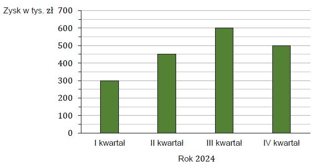

Na diagramie przedstawiono zysk pewnej firmy w kolejnych kwartałach 2024 roku.

Oceń prawdziwość podanych zdań. Wybierz P, jeśli zdanie jest prawdziwe, albo F – jeśli jest fałszywe.
1. Zysk tej firmy w I kwartale stanowi \(\frac{1}{6}\) zysku z całego roku 2024.
2. Zysk tej firmy w drugim półroczu 2024 roku był o 350 tysięcy złotych większy niż jej zysk w pierwszym półroczu 2024 roku.
Dokończ zdanie. Wybierz właściwą odpowiedź spośród podanych.
Wartość wyrażenia \(4^3-8^2:2^4\) jest równa
Dane jest wyrażenie
\( (0,75\cdot 8 + 8 \cdot\frac{1}{2}):(-2) \)
Dokończ zdanie. Wybierz właściwą odpowiedź spośród podanych.
Wartość tego wyrażenia jest równa
Uczniowie trzech klas: 8A, 8B i 8C, zebrali łącznie 132,9 kg makulatury. Uczniowie klas 8A i 8B zebrali łącznie 90,6 kg makulatury, a uczniowie klas 8B i 8C zebrali łącznie 86,8 kg makulatury.
Ile kilogramów makulatury zebrali uczniowie klasy 8B? Wybierz właściwą odpowiedź spośród podanych.
Uzupełnij zdania. Wybierz odpowiedź spośród oznaczonych literami A i B oraz odpowiedź spośród oznaczonych literami C i D.
Równość \(3𝑎−4=𝑎+2 \) jest spełniona dla liczby \(𝑎\) równej A/B
Wyrażenie \( (3𝑎−4)−(𝑎+2)\) jest równe C/D
Aleks kupił jeden komplet słuchawek bezprzewodowych, dwie jednakowe ładowarki i dwa jednakowe dyski USB. Jeden dysk USB był 2 razy tańszy od ładowarki, a komplet słuchawek bezprzewodowych był 4 razy droższy od jednej ładowarki.
Dokończ zdanie. Wybierz właściwą odpowiedź spośród podanych.
Jeżeli przez \(𝑥\) oznaczymy cenę jednej ładowarki, to wartość zakupów Aleksa opiszemy wyrażeniem
Dane są trzy liczby: \(𝑥=5,27⋅10^{−3}, 𝑦=0,0023, 𝑧=1400⋅10^{−5}\). Uporządkowano te liczby w kolejności od najmniejszej do największej.
Ktory zapis przedstawia poprawny sposob uporz.dkowania liczb \(x, y, z \)? Wybierz właściwą odpowiedź spośród podanych.